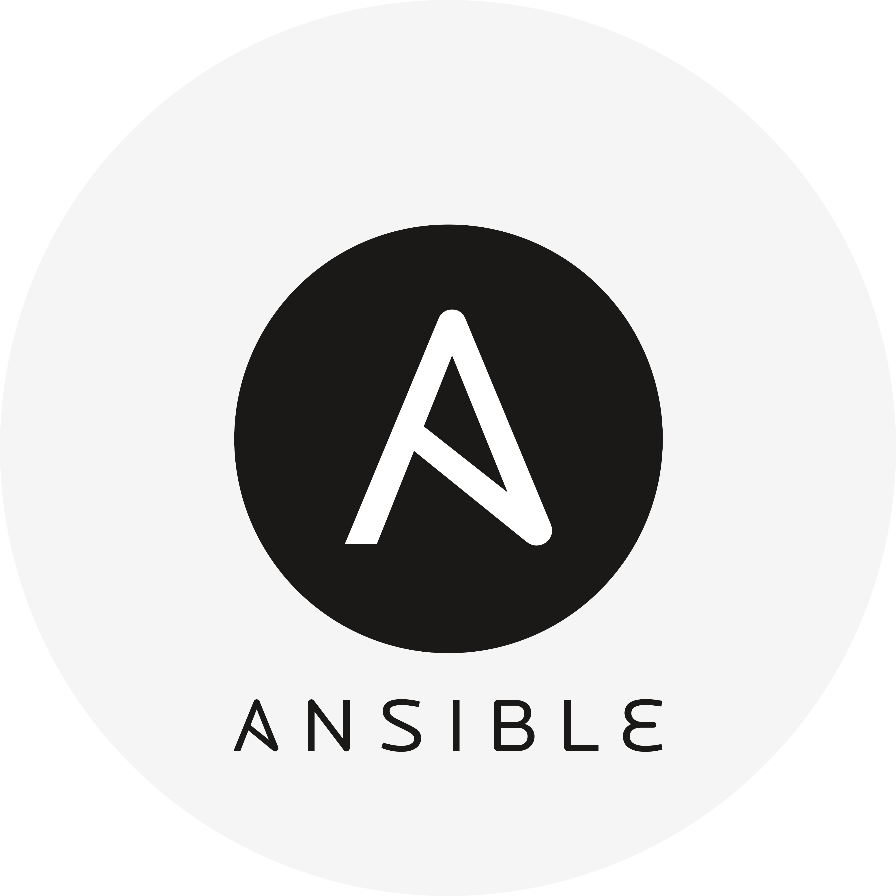
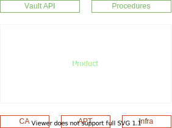

La Protection des Actifs grâce à une bonne Gestion du Secret
Rappels du mémoire
( TL ; DR )
“ Pour une entreprise comptant plusieurs dizaines d’équipes aux méthodes et cultures diverses, comment limiter l’exposition aux cyberattaques de ses actifs et de son image en évitant la fuite de ses secrets sensibles ? ”
“ Une entreprise comptant plusieurs dizaines d'équipes ”

“ Méthodes et cultures diverses ”

“ Limiter l'exposition aux cyberattaques ”
“ Protéger les actifs et l'image ”


“ Empêcher la fuite des secrets sensibles ”

Solution - CERBERE


Problématique de la soutenance
“ Comment les pratiques et technologies DevOps / SRE permettent d'apporter un cadre sain et sécurisé nécessaire au déploiement d'une plateforme de coffre-fort numérique ?”
S. R. E.
- Infrastructure As Code
- Tests Automatisés
- Intégration Continue
- Approche Produit
S ite
R eliability
E ngineering

| + | - | |
|---|---|---|
| OPS | Sécurité | Lourdeur |
| DEV | Agilité | Sécurité |
Infrastructure As Code
Tests Automatisés
Intégration / Déploiement Continu
Approche Produit
Concept

Technologie
Fonctionnement
Inventaire
all:
children:
secrets:
children:
dc1:
hosts:
aa08srvcerfg001.cdweb.biz:
cluster: A04NTNXAL001
datacenter: DC1
domain: cdweb.biz
interface0network: LAN-RCT-1000
interface1subnet: VLAN 146 - LDC
os: Debian 10
[...]
aa08srvcervt001.cdweb.biz:
cluster: A04NTNXAL001
datacenter: DC1
domain: cdweb.biz
interface0network: LAN-RCT-1000
interface1subnet: VLAN 146 - LDC
os: Debian 10.4
[...]
aa08srvcervt002.cdweb.biz:
cluster: A04NTNXAL001
datacenter: DC1
domain: cdweb.biz
interface0network: LAN-RCT-1000
interface1subnet: VLAN 146 - LDC
os: Debian 10.4
[...]
aa08srvcervt003.cdweb.biz:
cluster: A04NTNXAL001
datacenter: DC1
domain: cdweb.biz
interface0network: LAN-RCT-1000
interface1subnet: VLAN 146 - LDC
os: Debian 10.4
[...]
dc2:
hosts:
aa08srvcerfg002.cdweb.biz:
cluster: A02NTNXBW001
datacenter: DC2
domain: cdweb.biz
interface0network: LAN-HPROD-1000
interface1subnet: VLAN 146 - PAR
os: Debian 10
[...]
aa08srvcervt004.cdweb.biz:
cluster: A02NTNXBW001
datacenter: DC2
domain: cdweb.biz
interface0network: LAN-HPROD-1000
interface1subnet: VLAN 146 - PAR
os: Debian 10.4
[...]
aa08srvcervt005.cdweb.biz:
cluster: A02NTNXBW001
datacenter: DC2
domain: cdweb.biz
interface0network: LAN-HPROD-1000
interface1subnet: VLAN 146 - PAR
os: Debian 10.4
[...]
aa08srvcervt006.cdweb.biz:
cluster: A02NTNXBW001
datacenter: DC2
domain: cdweb.biz
interface0network: LAN-HPROD-1000
interface1subnet: VLAN 146 - PAR
os: Debian 10.4
[...]
fragments:
hosts:
aa08srvcerfg001.cdweb.biz: {}
aa08srvcerfg002.cdweb.biz: {}
vault:
hosts:
aa08srvcervt001.cdweb.biz: {}
aa08srvcervt002.cdweb.biz: {}
aa08srvcervt003.cdweb.biz: {}
aa08srvcervt004.cdweb.biz: {}
aa08srvcervt005.cdweb.biz: {}
aa08srvcervt006.cdweb.biz: {}
ungrouped: {}
Architecture de la solution : plateforme Vault

Répartition des rôles


Définition de l'infrastructure
---
- hosts: "{{ groups['dc1'] | intersect(groups['vault']) }}"
roles:
- role: vault-server
vars:
ca_directory: /home/tristan/Desktop/vault_sandbox_ca/
us_directory: /home/tristan/Desktop/vault_sandbox_us/
secret_shares: 2
secret_threshold: 1
ha_endpoint: >-
{{ hostvars[ansible_play_hosts[0]]
['ansible_facts']['default_ipv4']['address'] }}
- hosts: "{{ groups['dc2'] | intersect(groups['vault']) }}"
roles:
- role: vault-server
vars:
ca_directory: /home/tristan/Desktop/vault_sandbox_ca/
us_directory: /home/tristan/Desktop/vault_sandbox_us/
secret_shares: 2
secret_threshold: 1
ha_endpoint: >-
{{ hostvars[ansible_play_hosts[0]]
['ansible_facts']['default_ipv4']['address'] }}
- hosts: fragment
roles:
- role: fragment-server
vars:
cacert: /home/tristan/Desktop/vault_sandbox_ca/ca.pem
keys: >-
{{ lookup('file', '/home/tristan/Desktop/vault_sandbox_us/keys')
| from_json }}
...
Infrastructure As Code
Tests Automatisés
Intégration / Déploiement Continu
Approche Produit
Concept

Technologies

Fonctionnement

Verify
- name: Verify vault unseal
hosts: vault
tasks:
- name: Get nginx logs
command: tail -n 1 /var/log/nginx/access.log
register: nginx_log
- assert:
that: nginx_log.stdout is search("PUT /v1/sys/unseal .* 404")
Infrastructure As Code
Tests Automatisés
Intégration / Déploiement Continu
Approche Produit
Concept

Technologies

Fonctionnement
Pipeline

Infrastructure As Code
Tests Automatisés
Intégration / Déploiement Continu
Approche Produit
Concept

Technologies


Fonctionnement


Architecture du code

Conclusion
?
Annexes
Supports materiels
Système d'exploitation
Système de fichier
Disque
Jack
Architecture des tests
Architecture des sous-modules